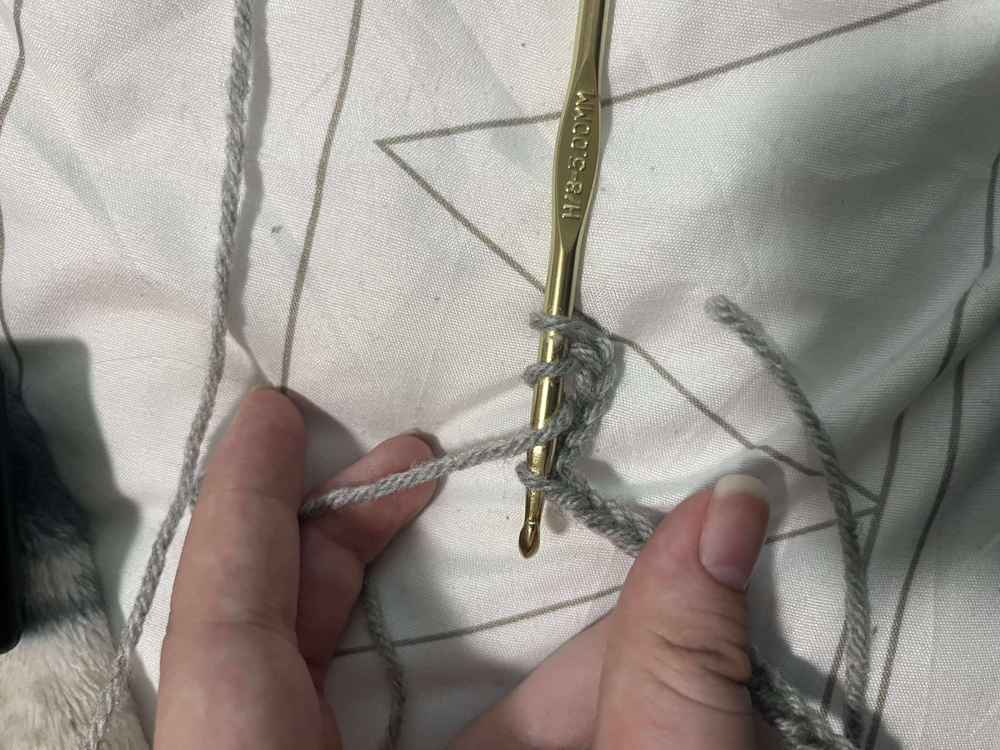
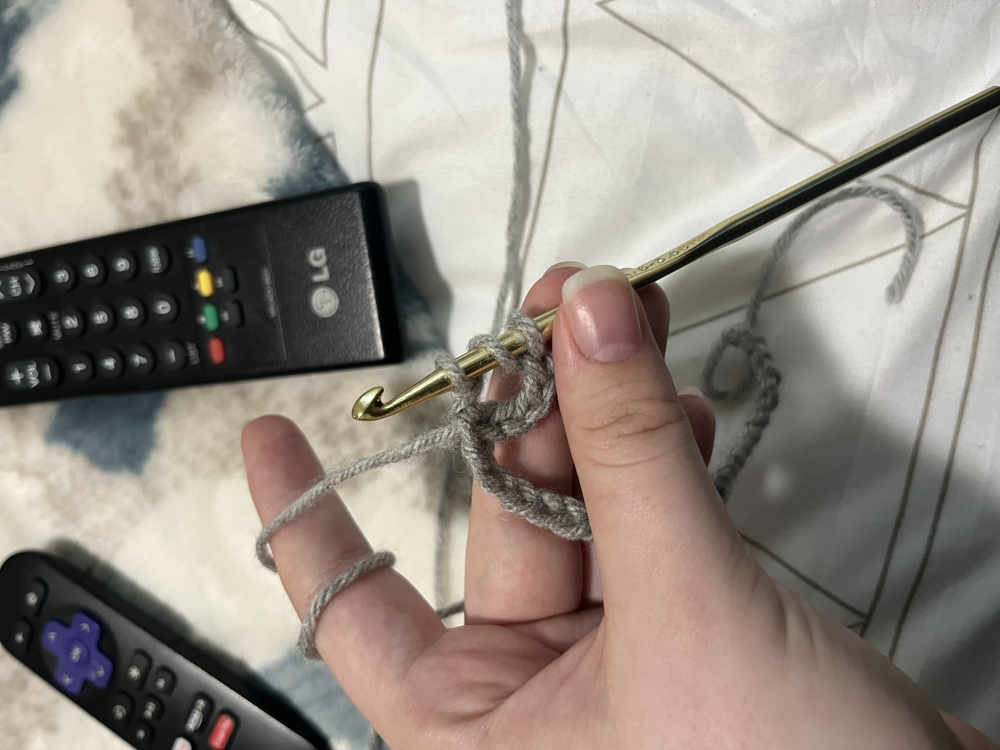
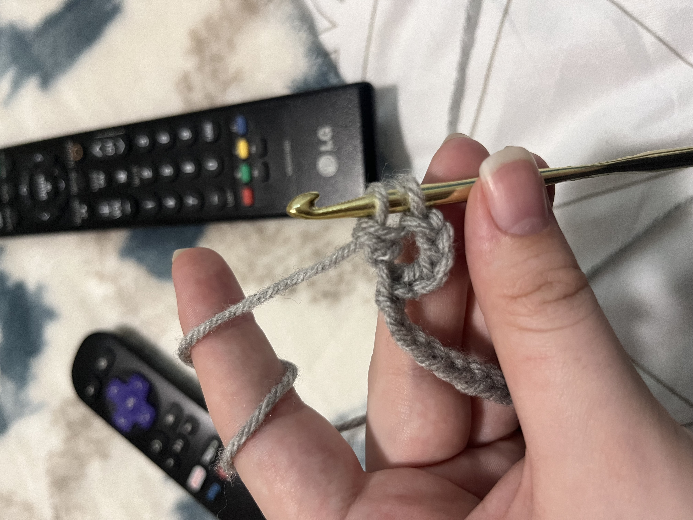
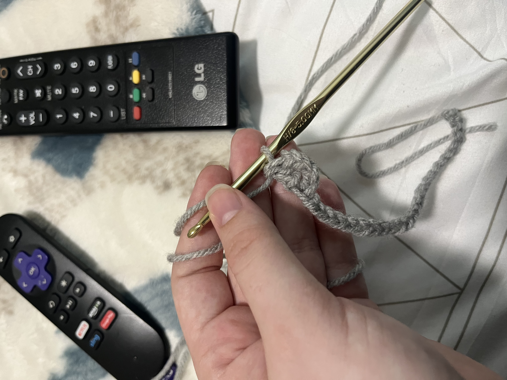

Basics of Crocheting
Treble(Triple) Stitch
Step 1:

Once your chain is made, add four more chain links.
Step 2:
Wrap yarn around the hook twice and insert it into the five chain from the hook.
Step 3:
  There should be four loops on the hook. Wrap the yarn around the hook and pull it through the first two loops, there should now be three loops on the hook. Repeat this process again, there should now be two loops on the hook. Repeat this for one last time and there should be one loop on the hook.
Step 4:

Repeat this entire process again in the next chain and do it until the chain is completed.
Step 5:


Once this row is completed, chain up four and repeat this enitre process to complete the second row.